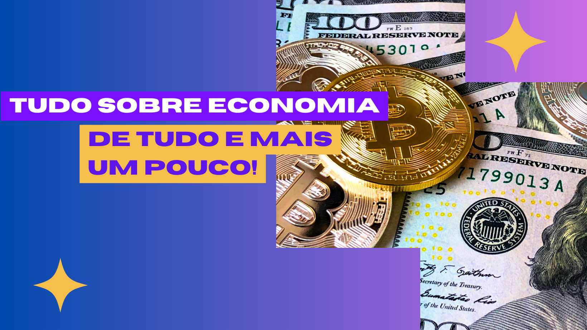

VALORIZAÇÃO DA MOEDA.
A moeda surgiu através da necessidade que a sociedade adquiriu de precisar trocar seus bens por valores que os correspondessem. Além de servir para o intermédio de trocas, as moedas estabelecem unidades de conta e medida de valores, e isto pode ser reservado ou utilizado para pagamentos e novas compras.
É ela, a moeda norte-americana, que generaliza o poder de compra e obtenção de bens e serviços e classifica a transação comercial.. “É uma moeda muito forte, não é à toa que serve de parâmetro para as demais, porque movimenta o mercado interno e o externoentão eu diria que a economia mundial, de certa forma, gira em torno do dólar“, comenta o professor, e economista Josenito Oliveira, do curso de Administração da Universidade Tiradentes (Unit Sergipe).
Mas a história do futebol não começou assim. O esporte percorreu um longo caminho para chegar a esse patamar sem glamour e com poucos holofotes.
Para enternermos melhor, precisamos saber o que faz a valorização da moeda, e essa resposta é relativamente simples, a taxa de câmbio e a lei da procura é oferta; com mais simplicidade, a taxa de câmbio e o valor que a sua moeda se encontra em comparação com as moedas de outros países; já na lei da procura e oferta, seria levado para o lado de questão mercadológicas, onde quem recebe maior procura tem uma maior valorização, da mesma forma que se houver pouca procura ocorrerá uma desvalorização.
Mas em geral, são diversos fatores que que mostram essa valorização ou desvalorização, como a liquidez, balança comercial, economia em geral, entre outros fatores.
MOEDA BRASILEIRA

A moeda do Brasil teve um aumento na valorização nos últimos anos pelo fato que houve um aumento na taxa música de juros que foi realizado pelo Banco Central para tentar conter a inflação, e desse modo o movimento acaba atraindo os ologotes do dinheiro internacional para o país. Em 2022 o Real foi a quarta moeda que mais sw valorizou em relacao ao dólar, almentou em 10,1% em comaparacao a divisa dos estados unidos, por causa dos motivos sitados a cima.
Ademais, o atual cenário das commodities fez, também, o real valorizar. O Brasil é um dos principais países que produzem na área do setor agrícola e metálico, ambos registraram um relevante aumento nos valores internacionais, desse modo o fluxo de investimentos cresce de forma linear no país.